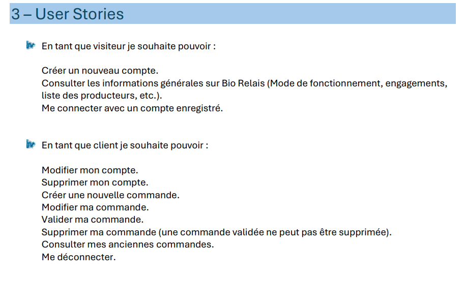
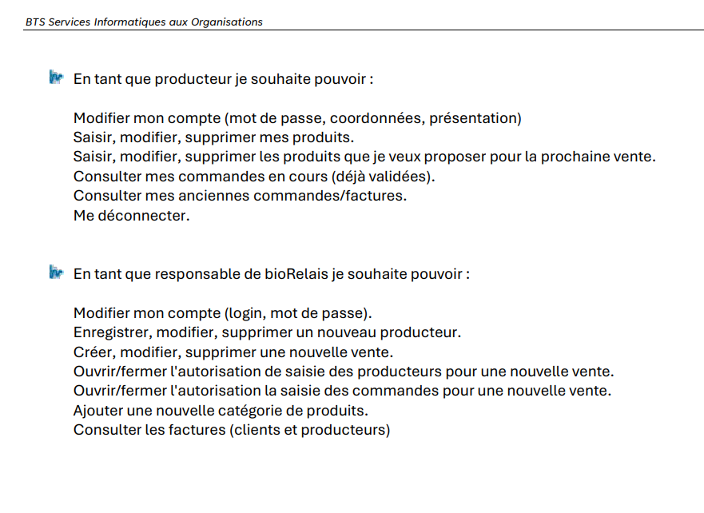

Dans ce projet, j'ai développé seul une application web en PHP objet et MySQL à partir d'un cahier des charges et de user stories. Le travail consistait à transformer les besoins de Bio Relais en fonctionnalités concrètes dans une application développée en local.
Les demandes concernaient plusieurs profils d'utilisateurs : visiteur, client, producteur et responsable. J'ai donc dû comprendre les attentes de chaque rôle, organiser les fonctionnalités et mettre en place les pages, formulaires et traitements nécessaires.
Cette compétence est validée car j'ai répondu à des demandes fonctionnelles précises en respectant les user stories. J'ai analysé les besoins, développé les fonctionnalités correspondantes et adapté l'application pour couvrir les différents cas prévus dans le cahier des charges.

